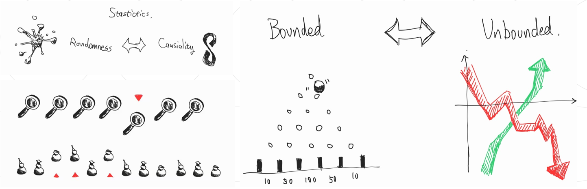
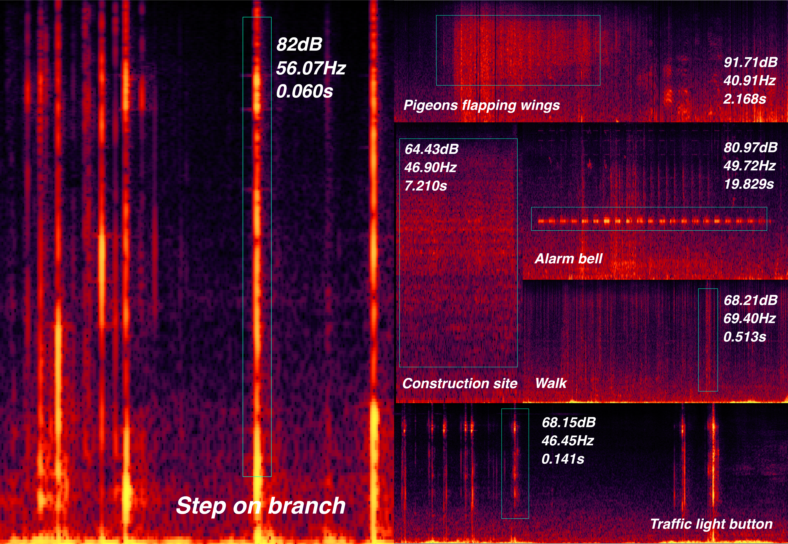
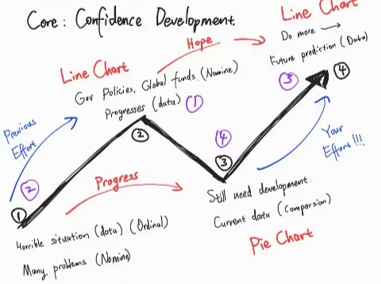
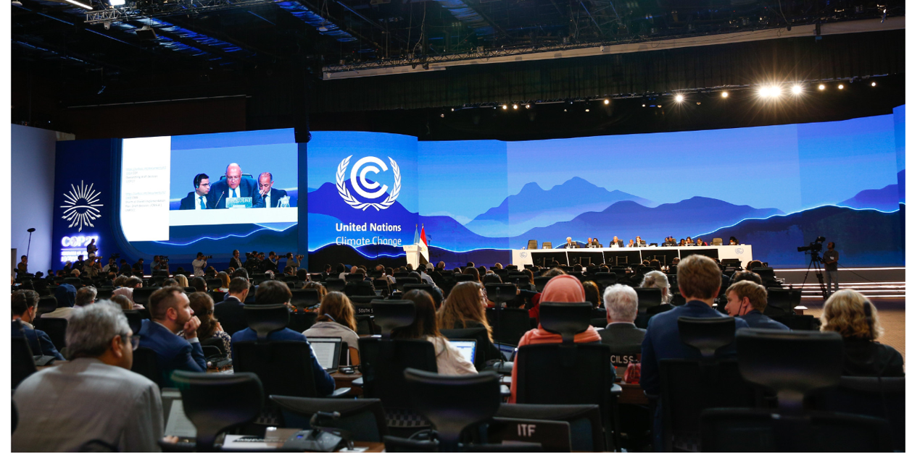
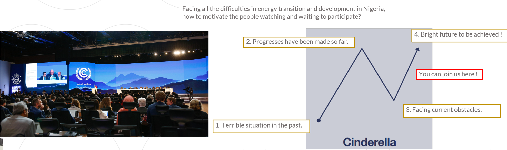
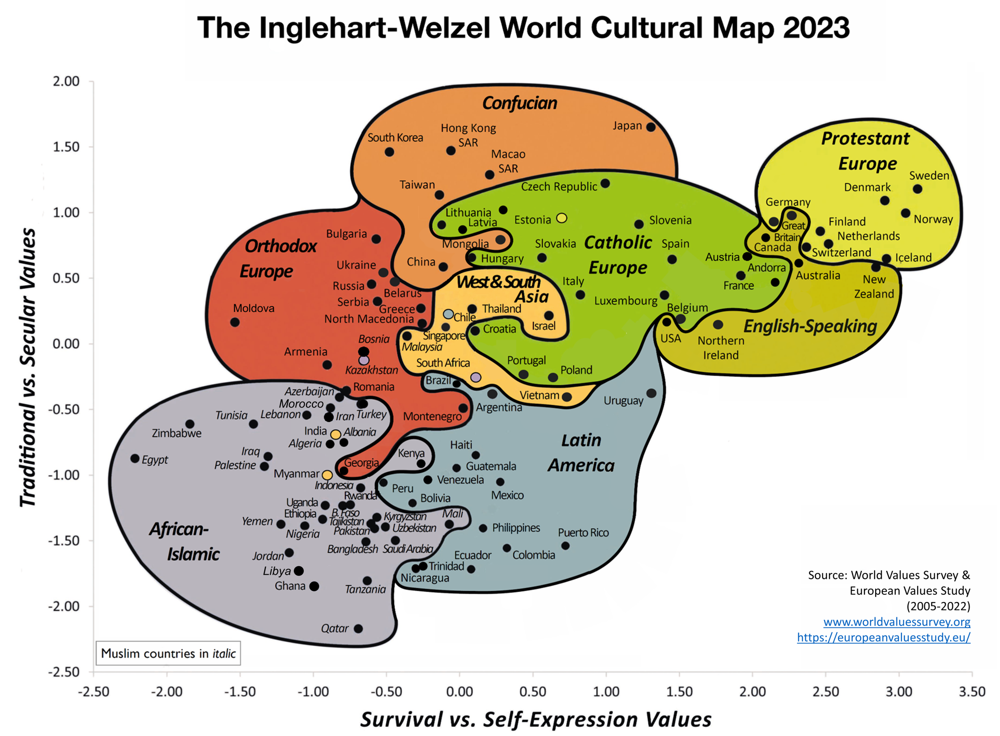

This is a summary of my research on data visualization for the Unit 2 Course Visualization Tools, Datasets, and Data Stories. I will explain my design method and practice through the process of “life to data, data to story”, starting with a definition of my design work:
“From the data given in words and figures, a way has to be found to extract the essential facts and put them into picture form.” (Neurath, 2017)

From Life to Data
Quantitative data is measurable, based on numbers and values, and capable of statistical analysis. It is commonly used to conduct research on a certain object in data visualization design research. In my two practices, Data-Selfie and London Soundscape, I collected data of various factors about daily routine and the internet usage in London.  In my researches, I encourage audience to engage in self-disclosure through research methods including diary studies and data-selfie. Furtherly, by participating as interviewee and reflecting on their practices, designers can try mitigating the ambiguities in data interpretation.  I also practiced dealing with qualitative data to gain a deeper understanding of audience's behaviors and experiences and to explore their psychological dynamics. In my practice of London Soundscape, I used 'Mental Mapping' research method to record one's cognitive memory of the environment throughout their journey, revealing unspoken subconscious elements.
Visualize Data
Charts integrate elements in datasets and transform data into comprehensible symbols, supporting effective visual communication. Edward Tufte emphasizes in The Visual Display of Quantitative Information (1983) that the choice and design of symbols in charts are critical to accurately and clearly presenting complex information.
 For instance, G. J. Whitrow discusses in his book Time in History: Views of Time from Prehistory to the Present Day (1989), various figures have been employed throughout history to record the flow of time, where the choice of symbols used in these charts is largely influenced by the perceived scale of time.
For instance, G. J. Whitrow discusses in his book Time in History: Views of Time from Prehistory to the Present Day (1989), various figures have been employed throughout history to record the flow of time, where the choice of symbols used in these charts is largely influenced by the perceived scale of time.
 My workflow starts from sketching the visual elements, then moves to digital design tools. The sketches introduce novel ways of thinking and leads to designs that are uniquely customized for the specific type of data problems we are working with. (Lupi G. 2017) Then I use digital design tools like Microsoft Excel, Google Sheet, RAWGraphs, Tableau to quicky test the graphics towards the expected outcome.
My workflow starts from sketching the visual elements, then moves to digital design tools. The sketches introduce novel ways of thinking and leads to designs that are uniquely customized for the specific type of data problems we are working with. (Lupi G. 2017) Then I use digital design tools like Microsoft Excel, Google Sheet, RAWGraphs, Tableau to quicky test the graphics towards the expected outcome.
 The design of interactive data visualizations follows a similar process. First try the effect on Figma, and then write the program through JavaScript, Python and R language. The website's backend database supports real-time updates of data, which is particularly important for work that pursues efficiency. for example, my practice on a human resource management system. It also places higher requirements on the readability of the data dashboard.
The design of interactive data visualizations follows a similar process. First try the effect on Figma, and then write the program through JavaScript, Python and R language. The website's backend database supports real-time updates of data, which is particularly important for work that pursues efficiency. for example, my practice on a human resource management system. It also places higher requirements on the readability of the data dashboard.
 Visualizing data in 3D modeling enhances performance in analyzing and presenting complex data. After 2D sketches, diagrams can be efficiently transformed into detailed 3D blueprints using software like Rhino and Blender. This method is discussed in Billie Faircloth's article in Architectural Design (2017), highlighting its frequent application in architectural practices. Furthermore, these models can be converted into physical forms using 3D engraving or printing to enrich the sensory experience of the data.
Visualizing data in 3D modeling enhances performance in analyzing and presenting complex data. After 2D sketches, diagrams can be efficiently transformed into detailed 3D blueprints using software like Rhino and Blender. This method is discussed in Billie Faircloth's article in Architectural Design (2017), highlighting its frequent application in architectural practices. Furthermore, these models can be converted into physical forms using 3D engraving or printing to enrich the sensory experience of the data.
From Data to Story
Designers refer to narrative theory to match data visualization methods to usage scenarios, for the universal applicability of narratives: "There are countless forms of narrative in the world... First of all, narrative starts with the very history of mankind; there is not, there has never been anywhere, any people without narrative" (Barthes & Duisit, 1975, p. 237).  I summarize the narrative methodologies of several influential data visualization designers in Design Data Narrative, and explain how they hold true from a narratological perspective. I also demonstrated how I translated the theories into tangible influence in my projects, Nigeria`s Decarbonization Strategy Advocacy, and HR Management System Data Dashboard Iteration.  Although narrative is universal, story is not. People `s preferences are diverse and must be differentiated when designing surveys. For example, my above two projects were both related to decision-making, but were designed in very different ways.  Firstly, data visualization on different media has different advantages. And the power of the medium can be more important than the content itself - as McLuhan M. pointed out in Understanding Media. While good design is considered both attractive and accurate, trade-offs across multiple design decision dimensions are often unavoidable. Corresponding to the medium, data visualization also differs depending on the audience. Methodologies from common design fields also apply to data visualization, such as the Visual Gestalt theory. Designers need to consider the effectiveness of visual communication to avoid the problems pointed out by Huff, D. in How to lie with statistics. (2023)  Then, Cultural context poses another challenge for data visualization. As is pointed out in the article Data Visualization for Audiences in Low & Middle-Income Countries (Tricia Aung, 2019), people with different perceptions of concepts such as humanity, science, statistic, data, etc. have caused troubles to designers. In my essay assignment: Finding Humanism from the Easternmost *Not yet reviewed*, I reviewed on the data visualization works of a Japanese Designer to see how the context of local culture molded the experience of the natives.
Reference List
Billie Faircloth`s "Plasticity: The Architectural Tool of Material Computation" in Architectural Design, 2017
Huff, D., 2023. How to lie with statistics. Penguin UK.
Hanington, Bruce, and Martin B. (2012) Universal Methods of Design: 100 Ways to Research Complex Problems, Develop Innovative Ideas, and Design Effective Solutions, Quarto Publishing Group USA,
Levin, G. and Brain, T., 2021. Code as creative medium: a handbook for computational art and design. MIT Press.
Landais, L.L., Jelsma, J.G.M., Dotinga, I.R. et al. Office workers' perspectives on physical activity and sedentary behaviour: a qualitative study. BMC Public Health 22, 621 (2022). https://doi.org/10.1186/s12889-022-13024-z
Lupi G., 2017, Data Humanism: The Revolutionary Future of Data Visualization, https://giorgialupi.com/data-humanism-my-manifesto-for-a-new-data-wold
McLuhan, M., 1994. Understanding media: The extensions of man. MIT press.
Neurath, O., 2017. Pictorial statistics following the Vienna method. ARTMargins, 6(1), pp.108-118.
Reference: Interactive Art & Computational Design, Spring 2014 An Advanced Studio in Arts Engineering and Freestyle Computing // Prof. Golan Levin, Carnegie Mellon University
Whitrow, G.J., 1989. Time in history: Views of time from prehistory to the present day. Oxford University Press, USA.
Contact Information
y.jiang0220237@arts.ac.uk
(+86) 13591604618
(+44) 7354 535980